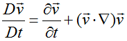
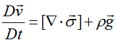
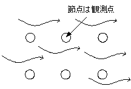
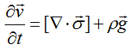
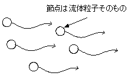

広告
・座標の取り方
オイラー座標とラグラジアン座標
数値計算では、タイムステップごとに節点の速度を計算していきます。 節点には、「観測点」という見方と「流体粒子」という見方があり、 それぞれオイラー座標、ラグラジアン座標が用いられます。 これらの座標の違いは、対流項(慣性力) を考慮するかしないかです。対流項は、全微分作用の項に含まれています。

オイラー座標
節点を観測点と見なして計算します。 対流項を考慮するため、節点は移動しません。 逆に言えば、節点を固定するため、慣性力によって節点が押されると解釈できます。


ラグラジアン座標
節点を流体粒子と見なして計算します。対流項を考慮しないため、節点は移動します。 逆に言えば、慣性力によって節点が押されて移動するため、 節点自体は慣性力を感じない(慣性力が蓄積しない) と解釈できます。節点の移動量は、タイムステップD t[s]×計算した速度 v[m/s]となります。


| prev | | | up | | | next |